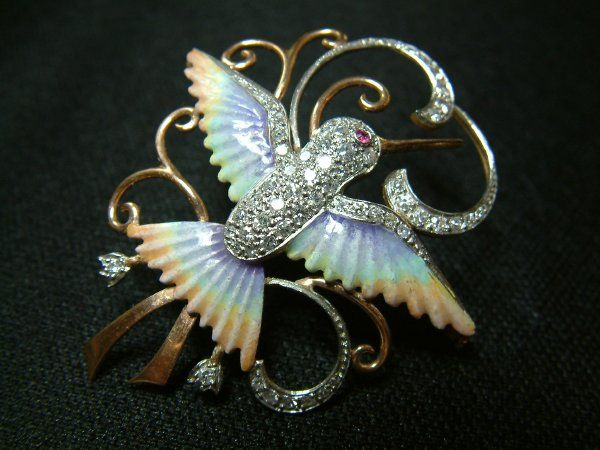

¡Bienvenidos a nuestra tienda!
Nos complace presentarte un espacio único donde podras descubrir y adquirir piezas históricas llenas de encanto y significado. En nuestra tienda, encontrarás una amplia variedad de joyas, estátuas, floreros, arte en porcelana y objetos coleccionables. Explora nuestros productos vintage y dejate llevar por el encanto de épocas pasadas.
|  | ||
| Joyas | Porcelana y Esculturas | Coleccionables |
| Nuestras joyas antiguas son tesoros dejados por antepasados, que traen consigo recuerdos únicos | Nuestras antiguedades de porcelana y esculturas estan en perfectas condiciones | Nuestra tienda tiene diversos objetos coleccionables, como juguetes, revistas y pinturas, entre otros |